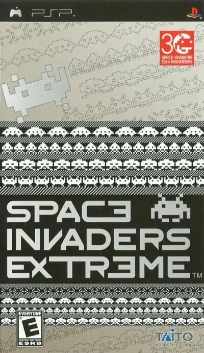

PSP
Space Invaders Extreme
- Año: 2008
- Género: Disparos / Pantalla fija
¡La aclamada renovación de la saga Space Invaders ya está aquí para invadir Steam con gráficos y música mejorados!
Disfruta de unos elementos visuales vibrantes de gran calidad con un sonido perfeccionado e interactivo. Los invasores han evolucionado, pero la pregunta es: ¿darás la talla tú también?
La versión de Steam incorpora un nuevo sistema de clasificación mundial para el modo Arcade. ¡Aprende los entresijos del sistema de puntuación y explótalos para conquistar los marcadores!
¿Quién prevalecerá en esta batalla por convertirse en el campeón mundial?
16 fases repletas de patrones de ataque enrevesados de invasores y jefes cuya estrategia se adapta al nivel de dificultad de la partid.
Practica en fases individuales en el modo Juego libre y luego bate la puntuación de tus rivales en el modo Arcade.
Descubre todas las innumerables bonificaciones que hay ocultas y aumenta tu puntuación a límites increíbles.
Sumérgete en la acción gracias a un sonido interactivo y unos gráficos que combinan a la perfección. ¡Bienvenido a un nuevo mundo de invasores!
Controles
Mando de PSP. El joystick mueve la cruceta y también la palanca analógica, porque muchos juegos de PSP solo se mueven con ella.
| Panel | Juego |
|---|---|
 | ✕ |
 | ○ |
 | R |
 | □ |
 | △ |
 | L |
 | Start |
 | Select |
+  | Salir del juego |
El panel en PSP